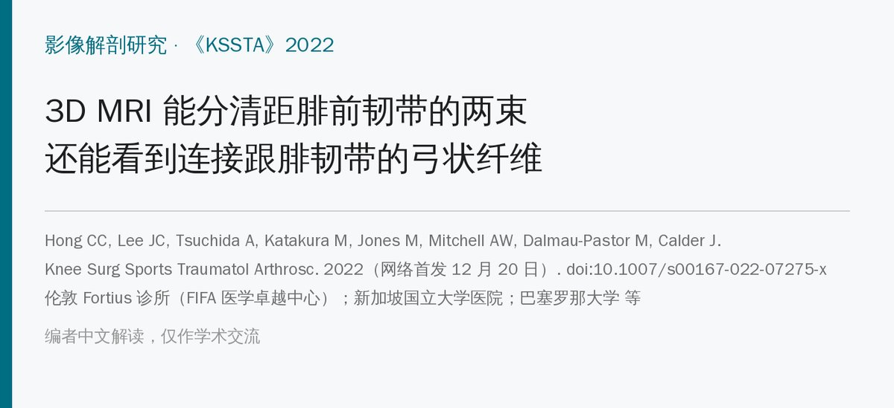
🔖原文信息（编者中文重排）
📚 文献信息
▪ Hong CC, Lee JC, Tsuchida A, Katakura M, Jones M, Mitchell AW, Dalmau-Pastor M, Calder J. Individual fascicles of the ankle lateral ligaments and the lateral fibulotalocalcaneal ligament complex can be identified on 3D volumetric MRI. Knee Surg Sports Traumatol Arthrosc. 2022 (published online 20 December 2022). doi:10.1007/s00167-022-07275-x
▪ 作者单位：伦敦 Fortius 诊所（FIFA 医学卓越中心）；新加坡国立大学医院；巴塞罗那大学人体解剖教研室；伦敦帝国理工学院 等
▪ 文章类型：前瞻性先导研究（30 名健康志愿者 3T MRI），证据等级 Ⅲ
• 在 3T、0.5 mm 层厚的 3D MRI 上，86.7% 的健康踝能分清距腓前韧带（ATFL）的上、下两束
• 上束明显更大：平均长 18.4 mm、宽 4.7 mm，比下束长 39%、宽 80.7%；只有一束的踝，大小和上束相近
• 首次在 MRI 上看到连接 ATFL 下束和跟腓韧带（CFL）的弓状纤维：双束者 84.6%、单束者 75% 可见
• ATFL–距腓后韧带连接 63.3%，CFL–距腓后韧带连接 70%；5 例两束之间可见穿支动脉
• 意义：MRI 上有望单独诊断上束损伤（“微不稳”），弓状纤维是否完好可能影响能否只修 ATFL
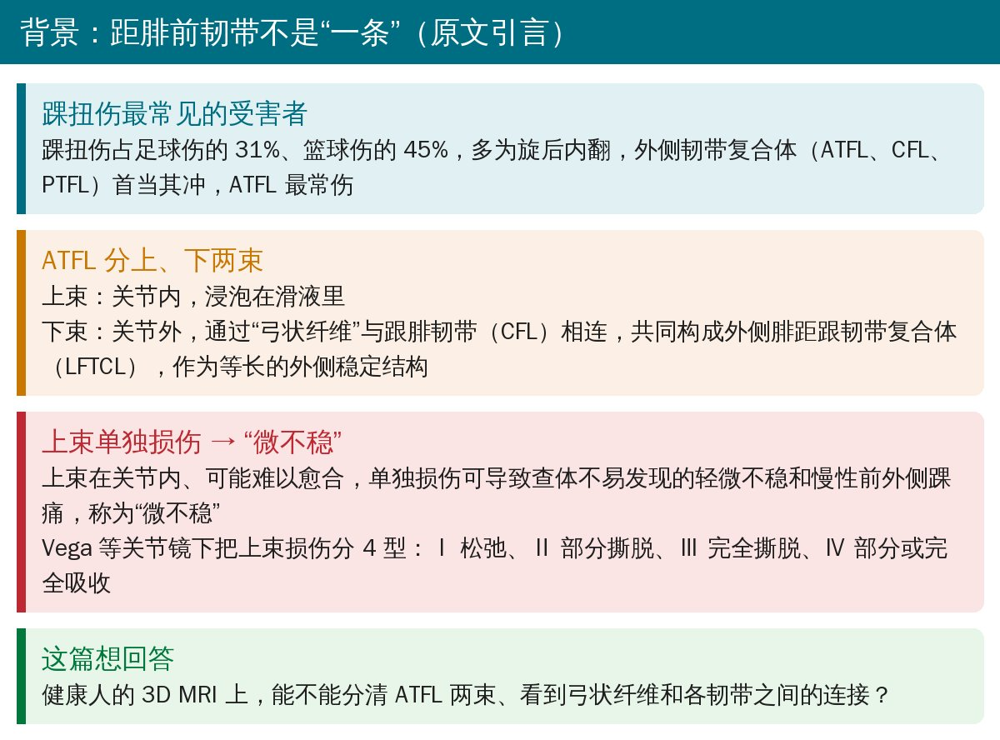
🔖研究背景（据原文引言整理）
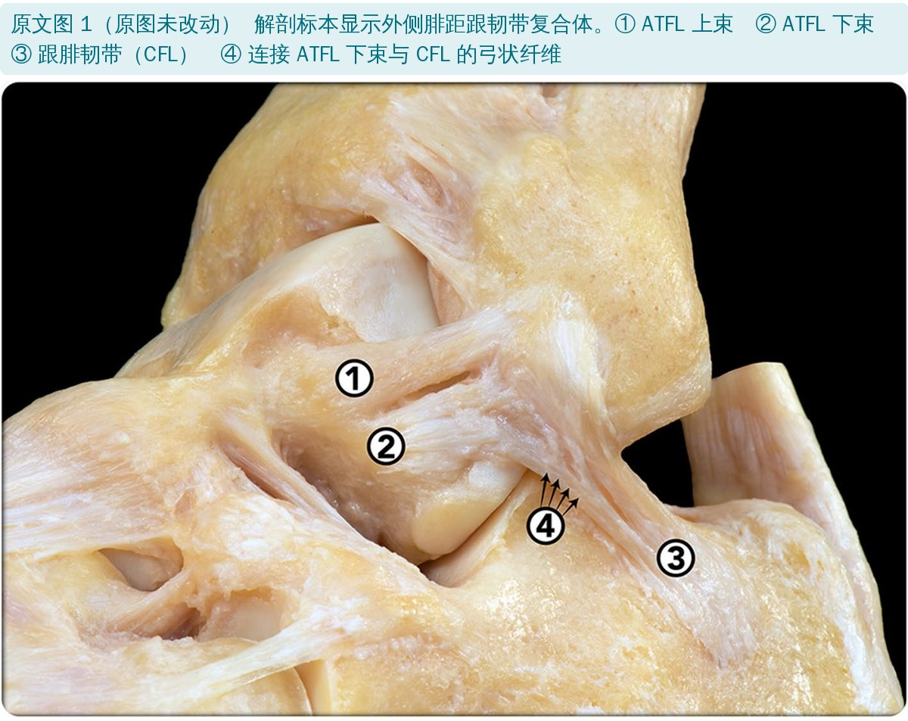
🔖原文图 1 解剖标本中的外侧腓距跟韧带复合体（原图未改动，中文对照见图注）
简单说：ATFL 有两束。上束在关节内，泡在滑液里，伤了可能长不好，引起查体不明显的轻微不稳和慢性前外侧痛（“微不稳”）；下束在关节外，通过弓状纤维和 CFL 连成一体（LFTCL 复合体），是踝外侧的等长稳定结构。此前还没有 MRI 研究描述过弓状纤维。
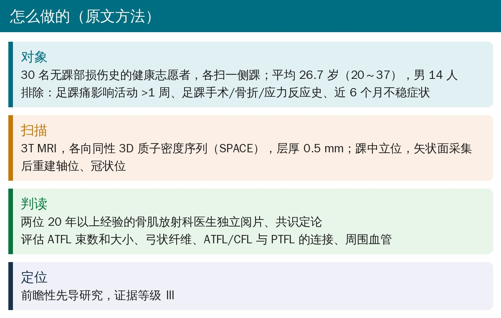
🔖研究方法（据原文整理）
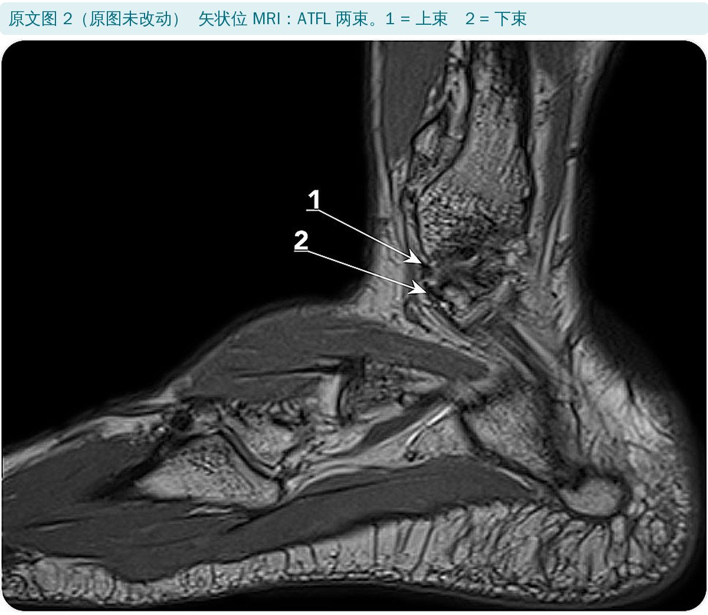
🔖原文图 2 矢状位 MRI 上的 ATFL 两束
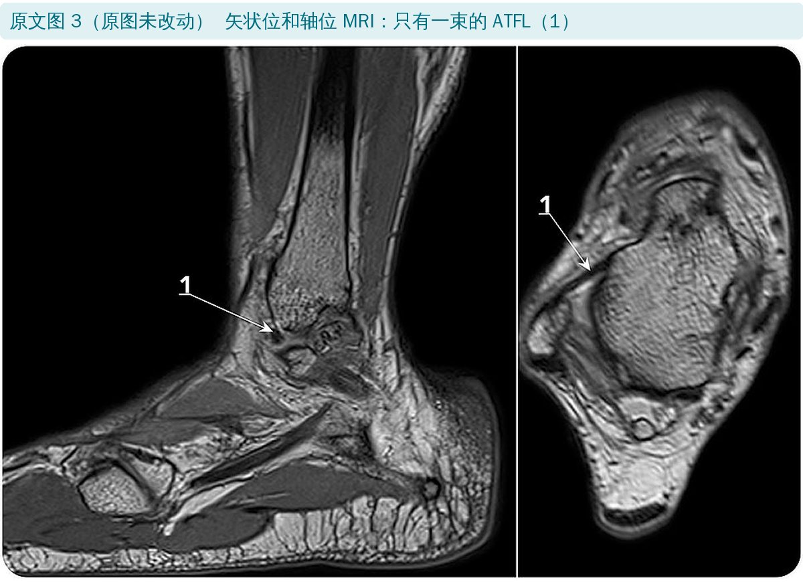
🔖原文图 3 只有一束的 ATFL
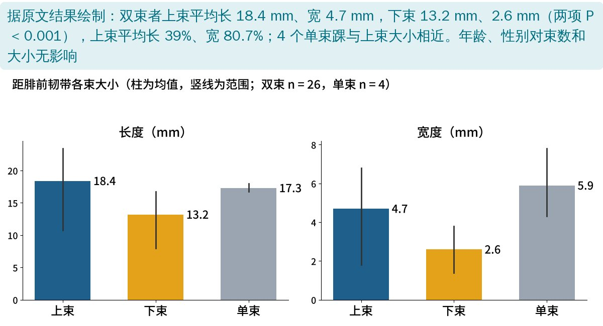
🔖据原文结果绘制：各束大小
| 长度 mm（范围） | 宽度 mm（范围） | |
|---|---|---|
| 双束·上束（n = 26） | 18.4（10.8～23.4） | 4.7（1.8～6.8） |
| 双束·下束（n = 26） | 13.2（8.0～16.7） | 2.6（1.4～3.8） |
| 单束（n = 4） | 17.3（16.7～18.0） | 5.9（4.3～7.8） |
上、下束长度和宽度差异均 P < 0.001；单束与上束差异无统计学意义。年龄、性别对束数和大小均无影响。
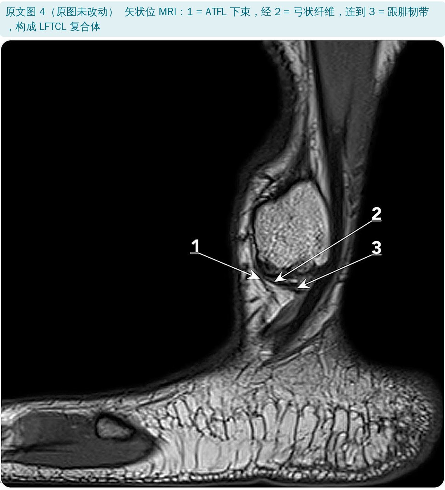
🔖原文图 4 ATFL 下束经弓状纤维连到 CFL
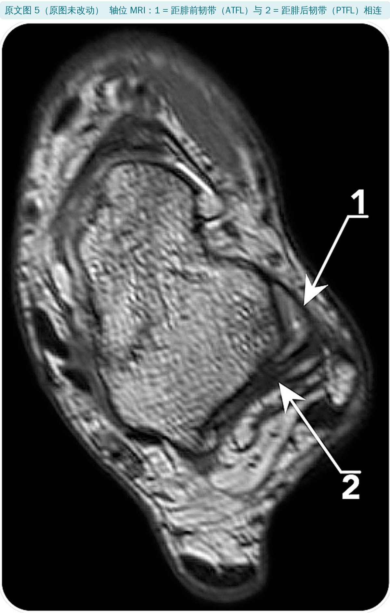
🔖原文图 5 ATFL 与距腓后韧带相连
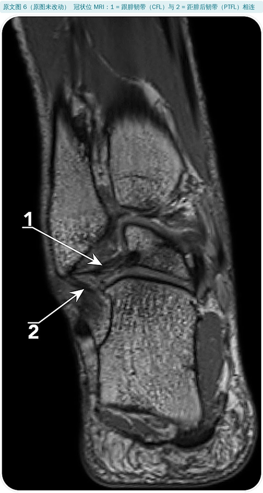
🔖原文图 6 CFL 与距腓后韧带相连
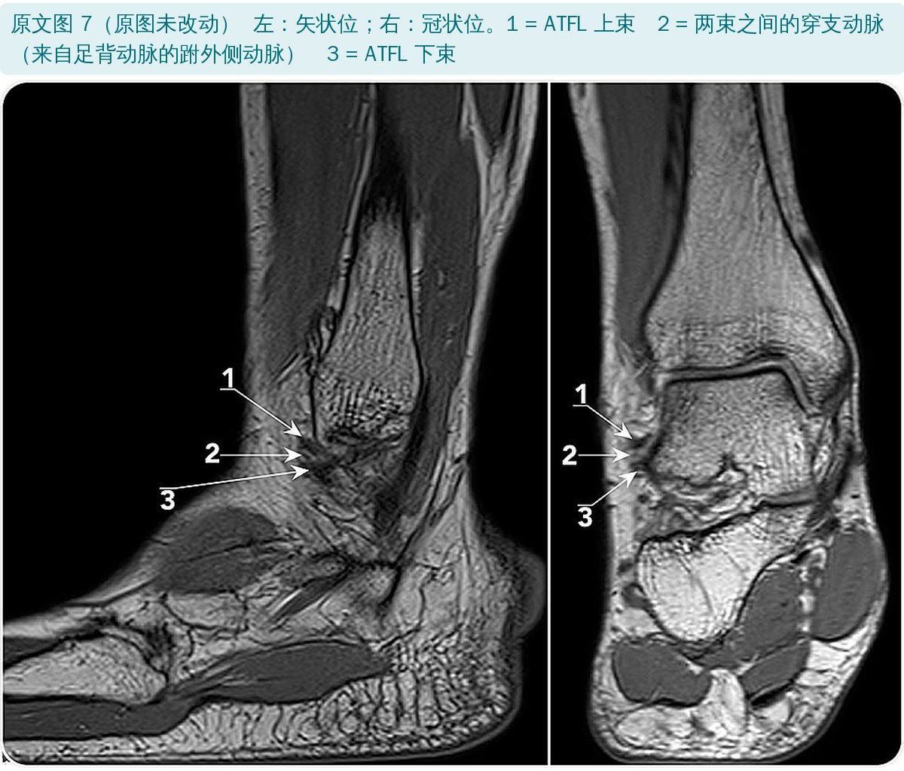
🔖原文图 7 ATFL 两束之间的穿支动脉
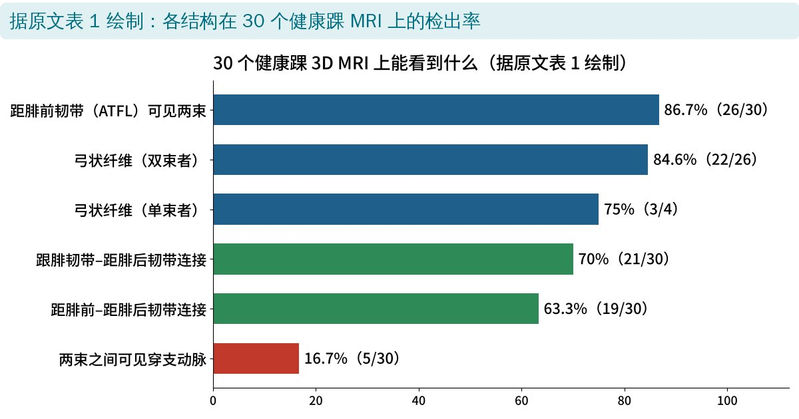
🔖据原文表 1 绘制：各结构检出率
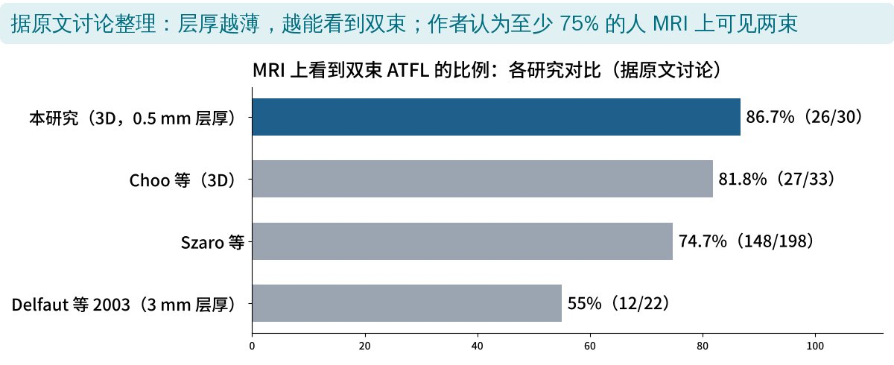
🔖据原文讨论整理：不同 MRI 研究中双束 ATFL 的检出率
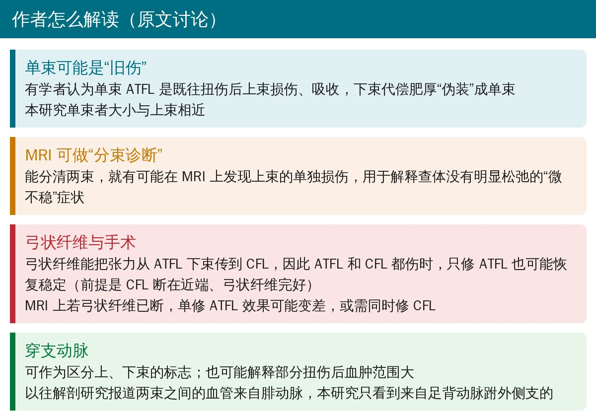
🔖讨论要点（据原文整理）
对临床最有用的两点：一是分束诊断——以后读 MRI 时可以专门看上束，帮助解释“查体不松但总觉得不稳、前外侧痛”的患者；二是弓状纤维——它能把张力从 ATFL 传到 CFL，这是“只修 ATFL 也能稳”的解剖基础，但前提是 CFL 断在近端、弓状纤维还在。
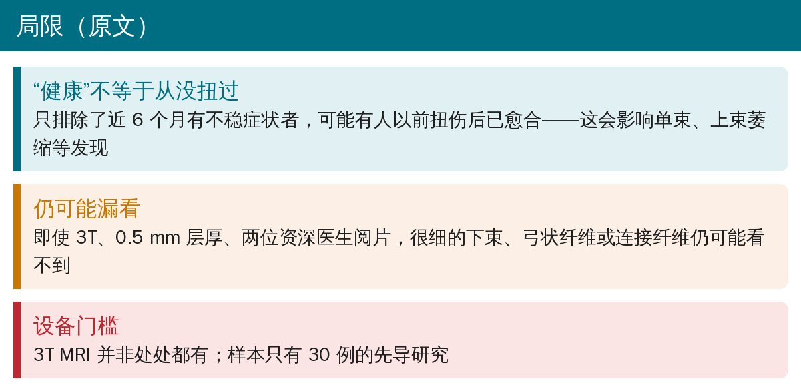
🔖研究局限（据原文整理）
• 说 4 个单束踝和上束“大小相近”，但单束平均宽 5.9 mm，比上束 4.7 mm 宽约四分之一，只是 4 例样本太少测不出差异
• 摘要写上束“在所有标本中都明显更大”，但上束长度最小 10.8 mm、下束最大 16.7 mm，范围重叠，文中没给逐例对比，无法核实
• 研究对象全是健康志愿者，没有一例损伤，摘要却说结果“支持在 LFTCL 复合体完好时单独修复 ATFL”，属于推论
欢迎关注骨科康复小黄公众号，获取更多物理治疗的专业知识！
📄参考文献：
Hong CC, Lee JC, Tsuchida A, Katakura M, Jones M, Mitchell AW, Dalmau-Pastor M, Calder J. Individual fascicles of the ankle lateral ligaments and the lateral fibulotalocalcaneal ligament complex can be identified on 3D volumetric MRI. Knee Surg Sports Traumatol Arthrosc. 2022. doi:10.1007/s00167-022-07275-x
原文版权归作者，独家授权欧洲运动创伤、膝关节外科与关节镜学会（ESSKA），非开放获取。本文为非商业的学术交流中文解读：原文图 1～7 按原样引用、未作修改，中文对照写在图注中；数据图由编者根据原文表 1 和讨论绘制，其余整理卡为编者根据原文撰写。仅供学习交流，如有侵权请联系删除。